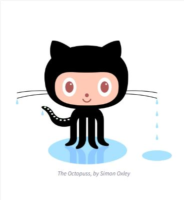

All About GitHub
FAQ
- Q. What is a version control system?
A. A version control system is a way of tracking and managing changes to software code. Creating software includes constant changes in code which leads to increasingly new versions (both minor and major) of your software. Version control is a central location where modifications to code can be viewed and tracked.
- Q. What is Git?
A. Git is a version control software. It is run through the command-line.
- Q. What is GitHub?
A. GitHub is a version control website which allows you to manage Git repositories. Since it's on the Internet, GitHub can be accessed by teams of developers from anywhere in the world.
- Q. What is the difference between Git and GitHub?
A. Git is the software that keeps track of your code's version histories. GitHub is a code hosting service where you manage your Git repositories.
- Q. Who started GitHub and how was it started?
A. Tom Preston-Werner, Chris Wanstrath and PJ Hyett launched GitHub in 2008. In 2008, Git had been around for three years, but there was nowhere to host those Git repositories. GitHub provided a place hosted on the Internet where Git repositories could be stored and maintained.
- Q. What company owns it now?
A. Microsoft acquired GitHub in late 2018.
- Q. How much does a GitHub account cost?
A. It costs nothing, nada, zip, zilch, rien, ولا شيء, нічого, tsis muaj dab tsi, किमपि न. It is free.
- Q. What is the Octocat?
A. Octocat is GitHub's mascot. It is an anthropomorphic cat with five octopus arms. Fun fact: Simon Oxley, the same graphic designer who designed Octocat, also designed Twitter's iconic bird logo.
Git/GitHub terms:
- Repository - Where a project "lives". The repository contains all of the files that make a project function as well as the version histories of these files.
- Commit - A commit is the act of putting something into a repository. A commit contains the content you're putting into the repository and should also contain a commit message briefly explaining what edits were made and why.
- Fork - To fork a repository is to create a copy of it. Forking allows changes to be made without affecting the current incarnation of code. If you end up wanting the changes, you can commit those changes.
- Push - To push means to send your committed changes to a repository on GitHub
- Pull requests - A pull request is a changed version of a file which is submitted for approval or rejection by the owner of a repository
- Workflows - GitHub Workflows take certain events and then trigger certain actions based on those events
- Issues - Issues are suggestions for improvement or questions that users may have concerning the repository or files in the repository
- Raw button - Clicking the Raw Button leads you to be able to view or edit the raw content of a file without any styling
- Blame button - Clicking the Blame Button lets you see edits made to the code, who made those edits, and when those edits were made.
